逆向过程
现在开始具体说明：
WhatsApp中的函数，二进制内函数偏移量地址是：0x100314974
最开始，用IDA打开并自动分析后，去查看IDA伪代码是：
- sub_100314974
__int64 sub_100314974()
{
_QWORD *v0; // x20
__int64 v1; // x8
__int64 v2; // x9
__int64 v3; // x22
__int64 v4; // x23
__int64 v5; // x21
__int64 v6; // x8
__int64 v7; // x19
__int64 v8; // x22
__int64 v9; // x21
__int64 v10; // x21
__int64 v12; // [xsp+0h] [xbp-40h]
__int64 v13; // [xsp+8h] [xbp-38h]
v1 = v0[2];
v12 = *(_QWORD *)(v1 + 16);
v13 = *(_QWORD *)(v1 + 24);
swift_bridgeObjectRetain(v13);
String.append(_:)(124LL, 0xE100000000000000LL);
v2 = v0[3];
v3 = *(_QWORD *)(v2 + 16);
v4 = *(_QWORD *)(v2 + 24);
swift_bridgeObjectRetain(v13);
String.append(_:)(v3, v4);
swift_bridgeObjectRelease(v5);
swift_bridgeObjectRetain(v13);
String.append(_:)(124LL, 0xE100000000000000LL);
swift_bridgeObjectRelease(v13);
v6 = v0[4];
v7 = *(_QWORD *)(v6 + 16);
v8 = *(_QWORD *)(v6 + 24);
swift_bridgeObjectRetain(v9);
String.append(_:)(v7, v8);
swift_bridgeObjectRelease(v10);
return v12;
}
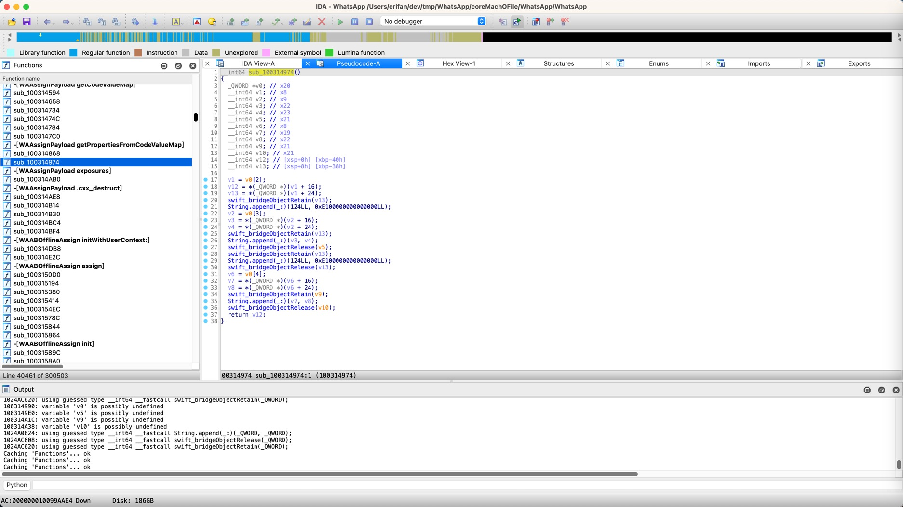
很明显，最开始的默认的IDA伪代码看不出此处函数的代码逻辑 =不知道函数具体是做什么的
然后，经过分析和调试，慢慢搞懂了代码逻辑，再回来给IDA伪代码中去优化改名：
- 函数名改名
- sub_100314974 -> StringAppend_100314974
- 变量名改名
v1->universeInfov12->userInfoNameStringObjPart1v13->userInfoNameStringObjPart2v2->experimentInfov6->bucketInfo- ...
- 加上注释
- 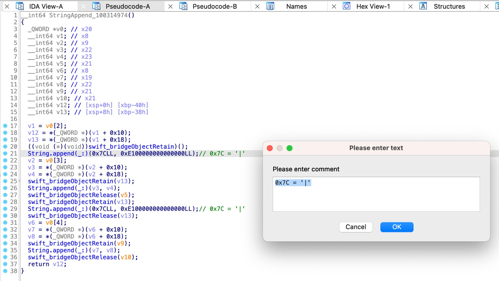
然后才能慢慢搞懂，逐渐的彻底搞懂代码的全部逻辑
接着去解释中间是，如何：
静态分析
动态调试
的。
先去动态调试代码逻辑：
此时先要搞清楚：
传入的参数值：
且通过后续研究，比如查看IDA的汇编代码：
__text:0000000100314974 sub_100314974 ; CODE XREF: sub_100314868+B4↑p
__text:0000000100314974
__text:0000000100314974 var_40 = -0x40
__text:0000000100314974 var_30 = -0x30
__text:0000000100314974 var_20 = -0x20
__text:0000000100314974 var_10 = -0x10
__text:0000000100314974 var_s0 = 0
__text:0000000100314974
__text:0000000100314974 SUB SP, SP, #0x50
__text:0000000100314978 STP X24, X23, [SP,#0x40+var_30]
__text:000000010031497C STP X22, X21, [SP,#0x40+var_20]
__text:0000000100314980 STP X20, X19, [SP,#0x40+var_10]
__text:0000000100314984 STP X29, X30, [SP,#0x40+var_s0]
__text:0000000100314988 ADD X29, SP, #0x40
__text:000000010031498C MOV X19, X20
__text:0000000100314990 LDR X8, [X20,#0x10]
__text:0000000100314994 LDP X9, X0, [X8,#0x10]
__text:0000000100314998 STP X9, X0, [SP,#0x40+var_40]
__text:000000010031499C BL _swift_bridgeObjectRetain
__text:00000001003149A0 MOV X20, SP
__text:00000001003149A4 MOV W0, #0x7C ; '|'
__text:00000001003149A8 MOV X1, #0xE100000000000000
__text:00000001003149AC BL _$sSS6appendyySSF ; String.append(_:)
__text:00000001003149B0 LDP X8, X21, [SP,#0x40+var_40]
__text:00000001003149B4 LDR X9, [X19,#0x18]
__text:00000001003149B8 LDP X22, X23, [X9,#0x10]
__text:00000001003149BC STP X8, X21, [SP,#0x40+var_40]
__text:00000001003149C0 MOV X0, X21
__text:00000001003149C4 BL _swift_bridgeObjectRetain
__text:00000001003149C8 MOV X20, SP
__text:00000001003149CC MOV X0, X22
__text:00000001003149D0 MOV X1, X23
__text:00000001003149D4 BL _$sSS6appendyySSF ; String.append(_:)
__text:00000001003149D8 LDP X20, X22, [SP,#0x40+var_40]
__text:00000001003149DC MOV X0, X21
__text:00000001003149E0 BL _swift_bridgeObjectRelease
__text:00000001003149E4 STP X20, X22, [SP,#0x40+var_40]
__text:00000001003149E8 MOV X0, X22
__text:00000001003149EC BL _swift_bridgeObjectRetain
__text:00000001003149F0 MOV X20, SP
__text:00000001003149F4 MOV W0, #0x7C ; '|'
__text:00000001003149F8 MOV X1, #0xE100000000000000
__text:00000001003149FC BL _$sSS6appendyySSF ; String.append(_:)
__text:0000000100314A00 LDP X20, X21, [SP,#0x40+var_40]
__text:0000000100314A04 MOV X0, X22
__text:0000000100314A08 BL _swift_bridgeObjectRelease
__text:0000000100314A0C LDR X8, [X19,#0x20]
__text:0000000100314A10 LDP X19, X22, [X8,#0x10]
__text:0000000100314A14 STP X20, X21, [SP,#0x40+var_40]
__text:0000000100314A18 MOV X0, X21
__text:0000000100314A1C BL _swift_bridgeObjectRetain
__text:0000000100314A20 MOV X20, SP
__text:0000000100314A24 MOV X0, X19
__text:0000000100314A28 MOV X1, X22
__text:0000000100314A2C BL _$sSS6appendyySSF ; String.append(_:)
__text:0000000100314A30 LDP X19, X20, [SP,#0x40+var_40]
__text:0000000100314A34 MOV X0, X21
__text:0000000100314A38 BL _swift_bridgeObjectRelease
__text:0000000100314A3C MOV X0, X19
__text:0000000100314A40 MOV X1, X20
__text:0000000100314A44 LDP X29, X30, [SP,#0x40+var_s0]
__text:0000000100314A48 LDP X20, X19, [SP,#0x40+var_10]
__text:0000000100314A4C LDP X22, X21, [SP,#0x40+var_20]
__text:0000000100314A50 LDP X24, X23, [SP,#0x40+var_30]
__text:0000000100314A54 ADD SP, SP, #0x50 ; 'P'
__text:0000000100314A58 RET
__text:0000000100314A58 ; End of function sub_100314974
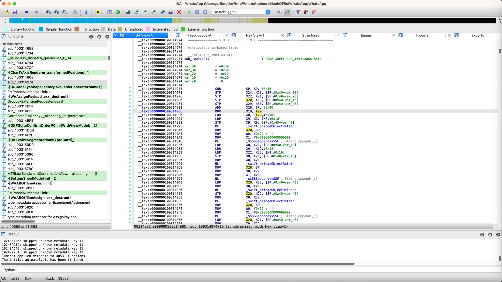
才搞清楚此处是特殊的：通过X20传递了参数的
而不是普通的，通过X0、X1、X2等寄存器传递参数的
然后去调试查看寄存器值：
(lldb) reg r x0 x1 x19 x20
x0 = 0x000000016d658c90
x1 = 0x00000002828d0780
x19 = 0x00000002828d0780
x20 = 0x00000002833c1140
(lldb) po $x20
MainAppLibrary.ExperimentAssignment
发现是：
- 类
MainAppLibrary.ExperimentAssignment
后续确认，是个：Swift的类，而不是普通的ObjC的类
如此，想要搞清楚，该类的具体细节，比如有哪些属性（字段）和函数等等，就无法直接查看到
然后需要去通过分析才能找到。
经过：
- 用class-dump导出的头文件
- 详见
- 找到类的字段=属性名称
- 导出的静态字符串等资源
- IDA中类的定义
- 找到类的字段=属性，以及具体的偏移量定义
最后找到了：
之前导出的头文件中，搜：
MainAppLibrary\d+ExperimentAssignment
找到的：
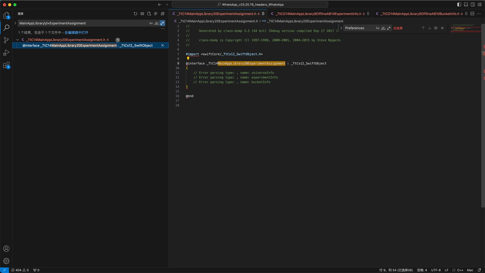
- /Users/crifan/dev/dev_root/iosReverse/WhatsApp/headers/WhatsApp_v23.20.79_headers_WhatsApp/_TtC14MainAppLibrary20ExperimentAssignment.h
//
// Generated by class-dump 3.5 (64 bit) (Debug version compiled Sep 17 2017 16:24:48).
//
// class-dump is Copyright (C) 1997-1998, 2000-2001, 2004-2015 by Steve Nygard.
//
#import <swiftCore/_TtCs12_SwiftObject.h>
@interface _TtC14MainAppLibrary20ExperimentAssignment : _TtCs12_SwiftObject
{
// Error parsing type: , name: universeInfo
// Error parsing type: , name: experimentInfo
// Error parsing type: , name: bucketInfo
}
@end
-》能看出：
- 类
_TtC14MainAppLibrary20ExperimentAssignment- 有3个属性
universeInfoexperimentInfobucketInfo
- 有3个属性
但是具体内部偏移量，不清楚。
然后去找
- 类
_TtC14MainAppLibrary20ExperimentAssignment
然后通过之前导出的静态字符串资源中，搜索
MainAppLibrary\d+ExperimentAssignment
而找到的：
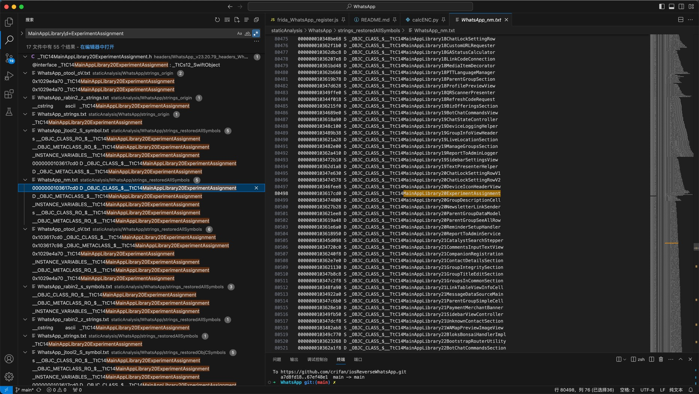
- /Users/crifan/dev/dev_root/iosReverse/WhatsApp/staticAnalysis/WhatsApp/strings_restoredAllSymbols/WhatsApp_nm.txt
0000000103617cd0 D _OBJC_CLASS_$__TtC14MainAppLibrary20ExperimentAssignment
- /Users/crifan/dev/dev_root/iosReverse/WhatsApp/staticAnalysis/WhatsApp/strings_restoredAllSymbols/WhatsApp_otool_oV.txt
00000001030a7aa8 0x103617cd0 _OBJC_CLASS_$__TtC14MainAppLibrary20ExperimentAssignment
isa 0x103617c98 _OBJC_METACLASS_$__TtC14MainAppLibrary20ExperimentAssignment
superclass 0x0 _OBJC_CLASS_$__TtCs12_SwiftObject
...
data 0x1030dfe79 Swift class
...
name 0x1029e4a70 _TtC14MainAppLibrary20ExperimentAssignment
...
ivars 0x1030dfe10 __OBJC_$_INSTANCE_VARIABLES__TtC14MainAppLibrary20ExperimentAssignment
找到了：
OBJC_CLASS____TtC14MainAppLibrary20ExperimentAssignment
然后去IDA中看看：
OBJC_CLASS____TtC14MainAppLibrary20ExperimentAssignment- 偏移量=地址：
0x103617cd0
- 偏移量=地址：
而找到
__data:0000000103617CD0 _OBJC_CLASS_$__TtC14MainAppLibrary20ExperimentAssignment __objc2_class <_OBJC_METACLASS_$__TtC14MainAppLibrary20ExperimentAssignment,\
__data:0000000103617CD0 ; DATA XREF: type metadata accessor for ExperimentAssignment+4↑o
__data:0000000103617CD0 ; __objc_classlist:00000001030A7AA8↑o
__data:0000000103617CD0 _OBJC_CLASS_$__TtCs12_SwiftObject, __objc_empty_cache, \ ; ExperimentAssignment
__data:0000000103617CD0 0, \
__data:0000000103617CD0 _TtC14MainAppLibrary20ExperimentAssignment_$classData.flags+1>
__data:0000000103617CF8 DCB 2
__data:0000000103617CF9 DCB 0
__data:0000000103617CFA DCB 0
__data:0000000103617CFB DCB 0
__data:0000000103617CFC DCB 0
__data:0000000103617CFD DCB 0
__data:0000000103617CFE DCB 0
__data:0000000103617CFF DCB 0
__data:0000000103617D00 DCB 0x28 ; (
__data:0000000103617D01 DCB 0
__data:0000000103617D02 DCB 0
__data:0000000103617D03 DCB 0
__data:0000000103617D04 DCB 7
__data:0000000103617D05 DCB 0
__data:0000000103617D06 DCB 0
__data:0000000103617D07 DCB 0
__data:0000000103617D08 DCB 0x80
__data:0000000103617D09 DCB 0
__data:0000000103617D0A DCB 0
__data:0000000103617D0B DCB 0
__data:0000000103617D0C DCB 0x10
__data:0000000103617D0D DCB 0
__data:0000000103617D0E DCB 0
__data:0000000103617D0F DCB 0
__data:0000000103617D10 DCQ $s14MainAppLibrary20ExperimentAssignmentCMn ; nominal type descriptor for ExperimentAssignment
__data:0000000103617D18 ALIGN 0x20
__data:0000000103617D20 DCB 0x10
__data:0000000103617D21 DCB 0
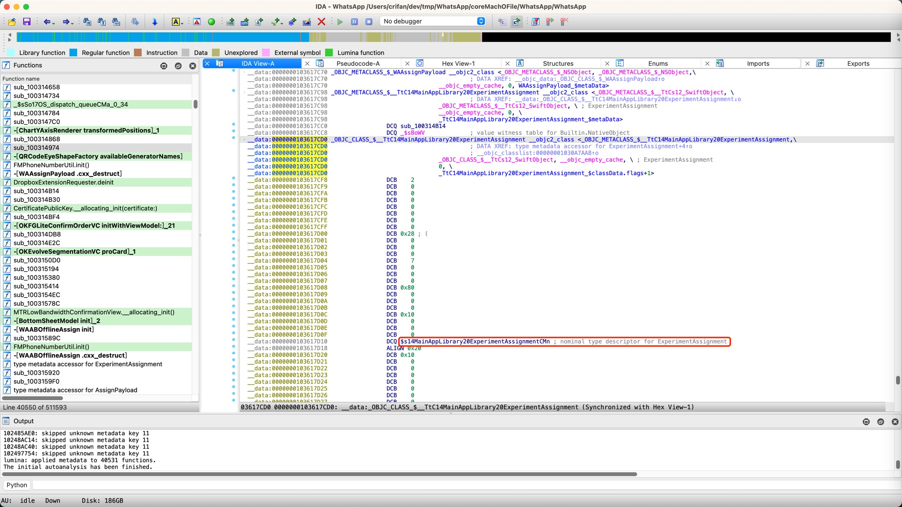
继而找到：
__data:0000000103617D10 DCQ $s14MainAppLibrary20ExperimentAssignmentCMn ; nominal type descriptor for ExperimentAssignment
双击
$s14MainAppLibrary20ExperimentAssignmentCMn
进去看到定义：
即：
- 类
MainAppLibrary.ExperimentAssignment的具体定义
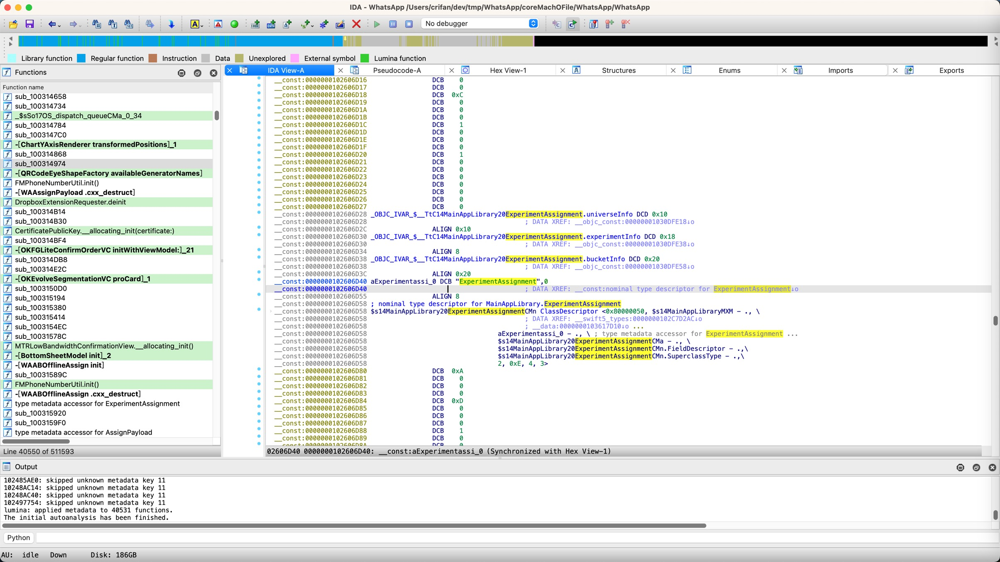
__const:0000000102606D27 DCB 0
__const:0000000102606D28 _OBJC_IVAR_$__TtC14MainAppLibrary20ExperimentAssignment.universeInfo DCD 0x10
__const:0000000102606D28 ; DATA XREF: __objc_const:00000001030DFE18↓o
__const:0000000102606D2C ALIGN 0x10
__const:0000000102606D30 _OBJC_IVAR_$__TtC14MainAppLibrary20ExperimentAssignment.experimentInfo DCD 0x18
__const:0000000102606D30 ; DATA XREF: __objc_const:00000001030DFE38↓o
__const:0000000102606D34 ALIGN 8
__const:0000000102606D38 _OBJC_IVAR_$__TtC14MainAppLibrary20ExperimentAssignment.bucketInfo DCD 0x20
__const:0000000102606D38 ; DATA XREF: __objc_const:00000001030DFE58↓o
__const:0000000102606D3C ALIGN 0x20
__const:0000000102606D40 aExperimentassi_0 DCB "ExperimentAssignment",0
__const:0000000102606D40 ; DATA XREF: __const:nominal type descriptor for ExperimentAssignment↓o
__const:0000000102606D55 ALIGN 8
__const:0000000102606D58 ; nominal type descriptor for MainAppLibrary.ExperimentAssignment
__const:0000000102606D58 $s14MainAppLibrary20ExperimentAssignmentCMn ClassDescriptor <0x80000050, $s14MainAppLibraryMXM - ., \
__const:0000000102606D58 ; DATA XREF: __swift5_types:0000000102C7D2AC↓o
__const:0000000102606D58 ; __data:0000000103617D10↓o ...
__const:0000000102606D58 aExperimentassi_0 - ., \ ; type metadata accessor for ExperimentAssignment ...
__const:0000000102606D58 $s14MainAppLibrary20ExperimentAssignmentCMa - ., \
__const:0000000102606D58 $s14MainAppLibrary20ExperimentAssignmentCMn.FieldDescriptor - .,\
__const:0000000102606D58 $s14MainAppLibrary20ExperimentAssignmentCMn.SuperclassType - .,\
__const:0000000102606D58 2, 0xE, 4, 3>
__const:0000000102606D80 DCB 0xA
__const:0000000102606D81 DCB 0
此处其实就可以看出：
MainAppLibrary.ExperimentAssignment==_TtC14MainAppLibrary20ExperimentAssignment- [+0x10] =
universeInfo - [+0x18] =
experimentInfo - [+0x20] =
bucketInfo
- [+0x10] =
后续去（Xcode调试中的lldb调试界面）查看内存中的数据，就是可以对得上的：
(lldb) x/8gx $x20
0x2833c1140: 0x0000000105dbbcd0 0x0000000200000003
0x2833c1150: 0x00000002819ecea0 0x00000002819ecf00
0x2833c1160: 0x00000002833b9b00 0x0000000000000000
0x2833c1170: 0x00000001efe1f820 0x0000000000000000
(lldb) po 0x0000000105dbbcd0
MainAppLibrary.ExperimentAssignment
(lldb) po 0x00000002819ecea0
MainAppLibrary.OfflineAB.UniverseInfo
(lldb) po 0x00000002819ecf00
MainAppLibrary.OfflineAB.ExperimentInfo
(lldb) po 0x00000002833b9b00
MainAppLibrary.OfflineAB.BucketInfo
如此，即可推断和确认和计算出此处的值：
MainAppLibrary.ExperimentAssignment==0x00000002833c1140==0x2833c1140- [+0x10] =
universeInfo0x00000002819ecea0
- [+0x18] =
experimentInfo0x00000002819ecf00
- [+0x20] =
bucketInfo0x00000002833b9b00
- [+0x10] =
而至此，理论上，其实可以通过：
IDA汇编代码 + IDA伪代码
能看出：
v1 = v0[2];
v2 = v0[3];
v6 = v0[4];
==
__text:0000000100314990 LDR X8, [X20,#0x10]
__text:00000001003149B4 LDR X9, [X19,#0x18]
__text:0000000100314A0C LDR X8, [X19,#0x20]
其实就分别对应着上面的：
[+0x10] = universeInfo0x00000002819ecea0
[+0x18] = experimentInfo0x00000002819ecf00
[+0x20] = bucketInfo0x00000002833b9b00
如此，即可去分别：
优化IDA伪代码，给变量重命名：
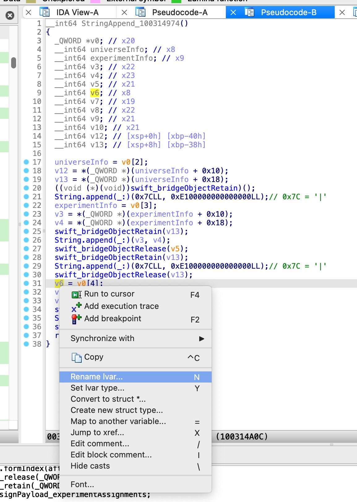
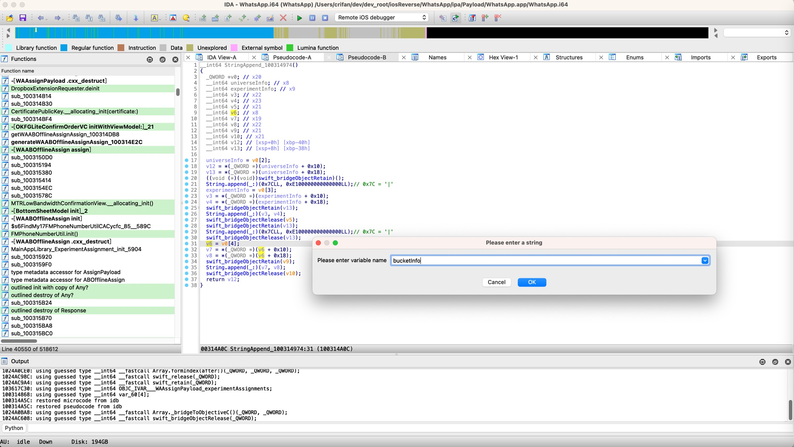
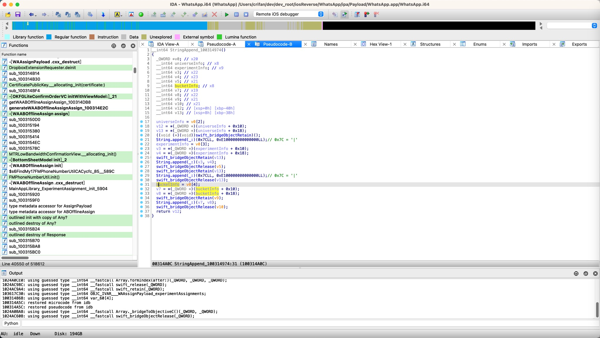
此时，IDA伪代码就变成了：
__int64 StringAppend_100314974()
{
_QWORD *v0; // x20
__int64 universeInfo; // x8
__int64 experimentInfo; // x9
__int64 v3; // x22
__int64 v4; // x23
__int64 v5; // x21
__int64 bucketInfo; // x8
__int64 v7; // x19
__int64 v8; // x22
__int64 v9; // x21
__int64 v10; // x21
__int64 v12; // [xsp+0h] [xbp-40h]
__int64 v13; // [xsp+8h] [xbp-38h]
universeInfo = v0[2];
v12 = *(_QWORD *)(universeInfo + 0x10);
v13 = *(_QWORD *)(universeInfo + 0x18);
((void (*)(void))swift_bridgeObjectRetain)();
String.append(_:)(0x7CLL, 0xE100000000000000LL);// 0x7C = '|'
experimentInfo = v0[3];
v3 = *(_QWORD *)(experimentInfo + 0x10);
v4 = *(_QWORD *)(experimentInfo + 0x18);
swift_bridgeObjectRetain(v13);
String.append(_:)(v3, v4);
swift_bridgeObjectRelease(v5);
swift_bridgeObjectRetain(v13);
String.append(_:)(0x7CLL, 0xE100000000000000LL);// 0x7C = '|'
swift_bridgeObjectRelease(v13);
bucketInfo = v0[4];
v7 = *(_QWORD *)(bucketInfo + 0x10);
v8 = *(_QWORD *)(bucketInfo + 0x18);
swift_bridgeObjectRetain(v9);
String.append(_:)(v7, v8);
swift_bridgeObjectRelease(v10);
return v12;
}
-》很明显，代码逻辑，就慢慢的，逐渐的，更加清晰了。
而后续的逻辑，看起来，主要就是：
String.append(_:)(0x7CLL, 0xE100000000000000LL);// 0x7C = '|'
String.append(_:)(v3, v4);
String.append(_:)(0x7CLL, 0xE100000000000000LL);// 0x7C = '|'
String.append(_:)(v7, v8);
本来以为很简单，直接去：
找到具体的：原先字符串和拼接字符串，即可
之前调试已经知道，希望的最终的值是：
<Swift.__SwiftDeferredNSArray 0x282642100>(
dummy_aa_offline_rid_universe_ios|dummy_aa_offline_rid_experiment_ios|control,
hide_link_device_button_release_rollout_universe|hide_link_device_button_release_rollout_experiment|control,
ios_prod_latam_tos_reg_universe|ios_prod_latam_tos_reg_experiment|test
)
所以，此处第一轮，应该是：
dummy_aa_offline_rid_universe_ios|dummy_aa_offline_rid_experiment_ios|control,
而去掉竖杠|，则应该分别是：
dummy_aa_offline_rid_universe_iosdummy_aa_offline_rid_experiment_ioscontrol
所以就去调试
结果去调试时，却发现找不到我们要的字符串的值
和预想的逻辑对不上
比如，第一个，不是：
dummy_aa_offline_rid_universe_ios
首先是：
0x102ab89a0 <+44>: mov x20, sp
0x102ab89a4 <+48>: mov w0, #0x7c
0x102ab89a8 <+52>: mov x1, #-0x1f00000000000000
0x102ab89ac <+56>: bl 0x104c44824 ; symbol stub for: String.append(_:)
此时值：
(lldb) reg r x0 x1
x0 = 0x000000000000007c
x1 = 0xe100000000000000
-》好像此处Swift函数String.append(_:)中，x0和x1，就不是我们要的普通的字符串
找不到我们要的：dummy_aa_offline_rid_universe_ios
后来自己研究出了，看起来是放到了：x20=sp中了？
去看看，果然还是有字符串值的：
其次是，虽然有字符串值，但是也还不是我们要的值：
(lldb) reg r x20 sp
x20 = 0x000000016d658c20
sp = 0x000000016d658c20
(lldb) x/8gx 0x000000016d658c20
0x16d658c20: 0xd000000000000021 0x80000001051946f0
0x16d658c30: 0x0000000000000002 0x00000002833c1140
0x16d658c40: 0x0000000105da1628 0x0000000105dbbcd0
0x16d658c50: 0x00000002833c1140 0x00000002828d0780
(lldb) po 0x80000001051946f0
9223372041235285744
(lldb) x/s 0x80000001051946f0
0x1051946f0: "dummy_aa_offline_user_rid_ios"
即，此处：
- 打印出的字符串是：
dummy_aa_offline_user_rid_ios
- 希望的字符串是
dummy_aa_offline_rid_universe_ios
所以就怀疑，难道是，Swift的字符串拼接函数：String.append(_:)，内部有额外的逻辑？
经过一番研究：
- 【未解决】iOS逆向WhatsApp：Swift函数String.append(_:)的字符串拼接的实现逻辑
没有发现啥特殊的逻辑。
正在一筹莫展之际，无意间发现别的帖子：
Swift 里字符串（十）修改字符串 – huahuahu (wordpress.com)
好像是Swift的String，比较特殊？
所以再转去研究：
Swift中的String的类的具体定义
最终彻底搞懂了：
核心就一句话：
- Swift中(Native的)LargeString中：真正字符串的地址=
objectAddr + 0x20
所以此处是：
(lldb) p/x 0x80000001051946f0 + 0x20
(unsigned long) 0x8000000105194710
(lldb) po 0x8000000105194710
9223372041235285776
(lldb) x/s 0x8000000105194710
0x105194710: "dummy_aa_offline_rid_universe_ios"
如此，最终才彻底搞清楚了：
- Swift中字符串拼接函数：
String.append(_:)，内部没有特殊逻辑- 但是传入的参数，此处其实是多个来源
- 2个寄存器：
x0和x1- 其实保存的好像也是：Swift中的small string，用2个寄存器=2个64位保存对应的值
- sp堆栈
- 保存的是Swift的large string，也是2个64位的地址保存其值
- 2个寄存器：
- 但是传入的参数，此处其实是多个来源
综合起来就是：
Swift的String.append(_:)originSwiftString.append(toAppendSwiftString)- originSwiftString：放在了sp堆栈中
- 只不过也要2个64位地址保存：
[sp]、[sp+0x08]
- 只不过也要2个64位地址保存：
- toAppendSwiftString：放在了寄存器中
- 只不过要2个寄存器保存：x0、x1
- originSwiftString：放在了sp堆栈中
最终，才真正搞懂，此处后续字符串的拼接的逻辑。
注：
关于另外的几个类的属性字段的定义，详见
- /Users/crifan/dev/dev_root/iosReverse/WhatsApp/WhatsApp_v23.25.85/headers/headers_WhatsApp_v23.25.85_WhatsApp_paradiseduo_dsdump/_TtC7Catalog24VariantTypeBaseViewModel.h
...
0x0010381f460 _TtCO14MainAppLibrary9OfflineAB10BucketInfo : Swift._SwiftObject @rpath/libswiftCore.dylib
{
+0x0010 name (0x10)
+0x0020 size (0x8)
+0x0028 configList (0x8)
}
0x0010381f510 _TtCO14MainAppLibrary9OfflineAB14ConfigVariable : Swift._SwiftObject @rpath/libswiftCore.dylib
{
+0x0010 code (0x8)
+0x0018 name (0x10)
+0x0028 value (0x10)
}
0x0010381f5c0 _TtCO14MainAppLibrary9OfflineAB14ExperimentInfo : Swift._SwiftObject @rpath/libswiftCore.dylib
{
+0x0010 name (0x10)
+0x0020 startTime (0x8)
+0x0028 endTime (0x8)
+0x0030 bucketList (0x8)
+0x0038 userFilter (0x28)
}
...
0x0010381f730 _TtCO14MainAppLibrary9OfflineAB12UniverseInfo : Swift._SwiftObject @rpath/libswiftCore.dylib
{
+0x0010 name (0x10)
+0x0020 unit (0x10)
+0x0030 experimentList (0x8)
+0x0038 userFilter (0x28)
}
...
此处就不赘述了。
然后就可以去计算出此处拼接处的字符串了：
(lldb) x/8gx 0x00000002833c1140
0x2833c1140: 0x0000000105dbbcd0 0x0000000200000003
0x2833c1150: 0x00000002819ecea0 0x00000002819ecf00
0x2833c1160: 0x00000002833b9b00 0x0000000000000000
0x2833c1170: 0x00000001efe1f820 0x0000000000000000
(lldb) po 0x00000002819ecea0
MainAppLibrary.OfflineAB.UniverseInfo
(lldb) po 0x00000002819ecf00
MainAppLibrary.OfflineAB.ExperimentInfo
(lldb) po 0x00000002833b9b00
MainAppLibrary.OfflineAB.BucketInfo
(lldb) x/6gx 0x00000002819ecea0
0x2819ecea0: 0x0000000105dc0398 0x0000000200000003
0x2819eceb0: 0xd000000000000021 0x80000001051946f0
0x2819ecec0: 0x6469725f72657375 0xe800000000000000
(lldb) x/6gx 0x00000002819ecf00
0x2819ecf00: 0x0000000105dc0238 0x0000000200000003
0x2819ecf10: 0xd000000000000023 0x80000001051946a0
0x2819ecf20: 0x000000006316eff0 0x0000000065e82280
(lldb) x/6gx 0x00000002833b9b00
0x2833b9b00: 0x0000000105dc00e8 0x0000000200000003
0x2833b9b10: 0x006c6f72746e6f63 0xe700000000000000
0x2833b9b20: 0x0000000000001388 0x00000002833b9b90
(lldb) x/s 0x8000000105194710
0x105194710: "dummy_aa_offline_rid_universe_ios"
(lldb) x/s 0x80000001051946c0
0x1051946c0: "dummy_aa_offline_rid_experiment_ios"
(lldb) p/c 0x006c6f72746e6f63
(long) control\0
-》
"dummy_aa_offline_rid_universe_ios""dummy_aa_offline_rid_experiment_ios""control"
由此得到最终拼接后的字符串：
dummy_aa_offline_rid_universe_ios|dummy_aa_offline_rid_experiment_ios|control
去调试确认和我们算出的值是一样的：
0x102ab8a2c <+184>: bl 0x104c44824 ; symbol stub for: String.append(_:)
0x102ab8a30 <+188>: ldp x19, x20, [sp]
0x102ab8a34 <+192>: mov x0, x21
->
(lldb) reg r x19 x20
x19 = 0xf00000000000004d
x20 = 0x00000002808e80c0
(lldb) p/x 0x00000002808e80c0 + 0x20
(long) 0x00000002808e80e0
(lldb) x/s 0x00000002808e80e0
0x2808e80e0: "dummy_aa_offline_rid_universe_ios|dummy_aa_offline_rid_experiment_ios|control"
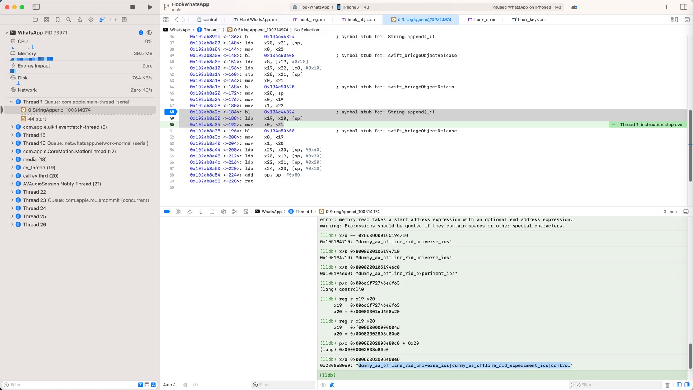
是一样的。
如此，继续去优化IDA伪代码：
去改名：
__int64 StringAppend_100314974()
{
_QWORD *curMainAppLibraryExperimentAssignment; // x20
__int64 universeInfo; // x8
__int64 experimentInfo; // x9
__int64 experimentInfoNameStringObjPart1; // x22
__int64 experimentInfoNameStringObjPart2; // x23
__int64 v5; // x21
__int64 bucketInfo; // x8
__int64 bucketInfoNameStringObjPart1; // x19
__int64 bucketInfoNameStringObjPart2; // x22
__int64 v9; // x21
__int64 v10; // x21
__int64 userInfoNameStringObjPart1; // [xsp+0h] [xbp-40h]
__int64 userInfoNameStringObjPart2; // [xsp+8h] [xbp-38h]
universeInfo = curMainAppLibraryExperimentAssignment[2];
userInfoNameStringObjPart1 = *(_QWORD *)(universeInfo + 0x10);
userInfoNameStringObjPart2 = *(_QWORD *)(universeInfo + 0x18);
swift_bridgeObjectRetain(userInfoNameStringObjPart2);
String.append(_:)(0x7CLL, 0xE100000000000000LL);// 0x7C = '|'
experimentInfo = curMainAppLibraryExperimentAssignment[3];
experimentInfoNameStringObjPart1 = *(_QWORD *)(experimentInfo + 0x10);
experimentInfoNameStringObjPart2 = *(_QWORD *)(experimentInfo + 0x18);
swift_bridgeObjectRetain(userInfoNameStringObjPart2);
String.append(_:)(experimentInfoNameStringObjPart1, experimentInfoNameStringObjPart2);
swift_bridgeObjectRelease(v5);
swift_bridgeObjectRetain(userInfoNameStringObjPart2);
String.append(_:)(0x7CLL, 0xE100000000000000LL);// 0x7C = '|'
swift_bridgeObjectRelease(userInfoNameStringObjPart2);
bucketInfo = curMainAppLibraryExperimentAssignment[4];
bucketInfoNameStringObjPart1 = *(_QWORD *)(bucketInfo + 0x10);
bucketInfoNameStringObjPart2 = *(_QWORD *)(bucketInfo + 0x18);
swift_bridgeObjectRetain(v9);
String.append(_:)(bucketInfoNameStringObjPart1, bucketInfoNameStringObjPart2);
swift_bridgeObjectRelease(v10);
return userInfoNameStringObjPart1;
}
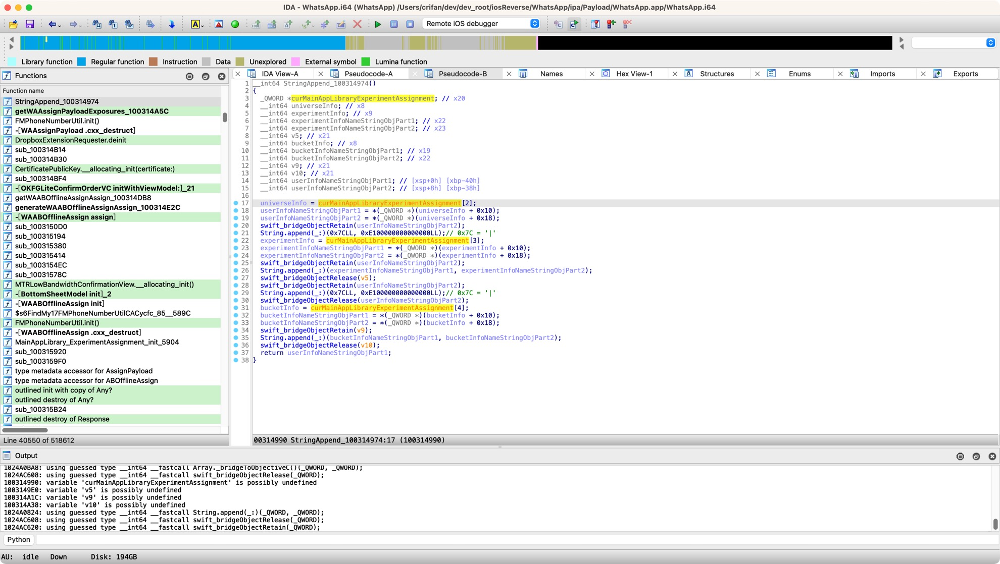
如此，其实代码逻辑已经很清楚了。
不过另外想到了：
如果IDA此处能识别：
- 类MainAppLibrary\d+ExperimentAssignment
就好了？就可以自动识别出：具体属性和字段了
而去试了试，前面搜到的，也确认IDA有的：
- 类名：_TtC14MainAppLibrary20ExperimentAssignment
即给此处变量更改类型type为：
- _TtC14MainAppLibrary20ExperimentAssignment*
操作步骤：
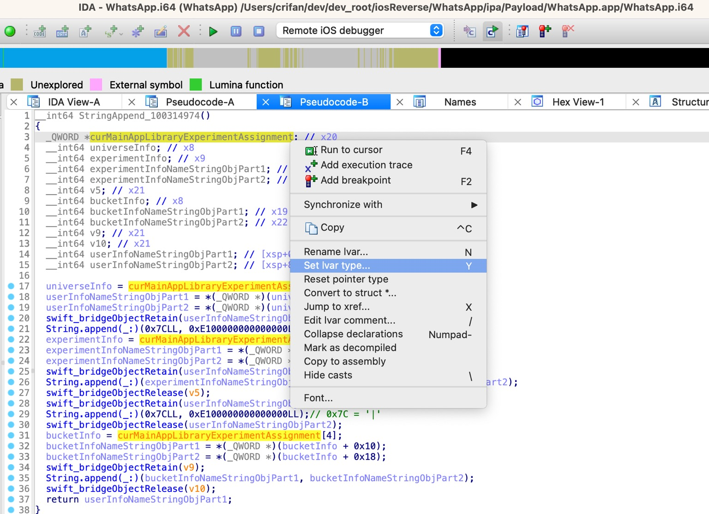
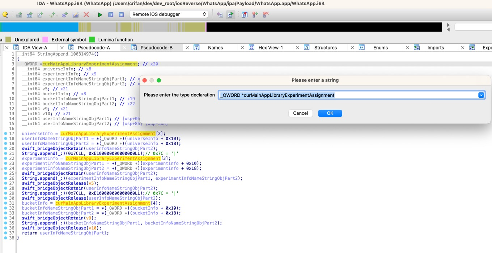
从：
_QWORD *curMainAppLibraryExperimentAssignment
改为：
_TtC14MainAppLibrary20ExperimentAssignment *curMainAppLibraryExperimentAssignment
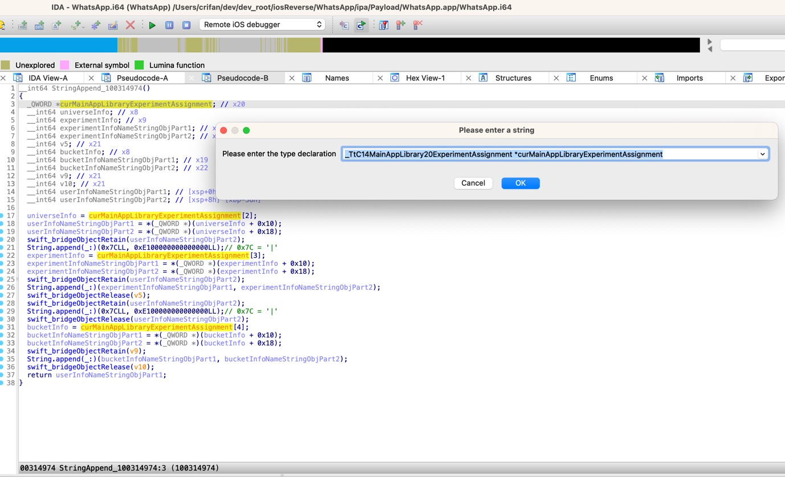
IDA中可见，的确自动识别成，类的属性=字段=成员的引用了：
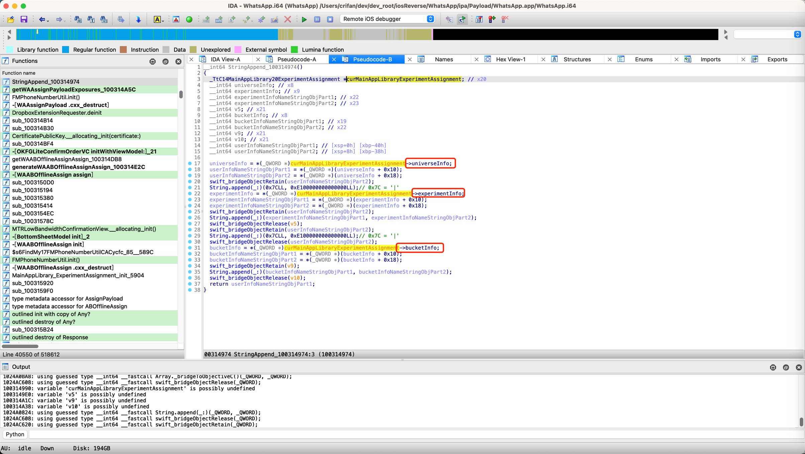
另外，再去给：
- universeInfo
- experimentInfo
- bucketInfo
也分别去修改类型为对应的类名：
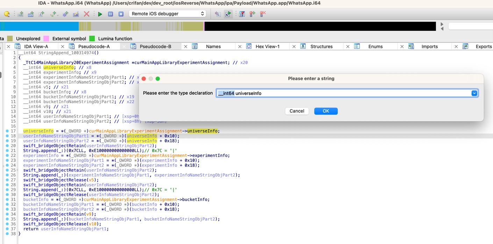
__int64 universeInfo->_TtCO14MainAppLibrary9OfflineAB12UniverseInfo* universeInfo
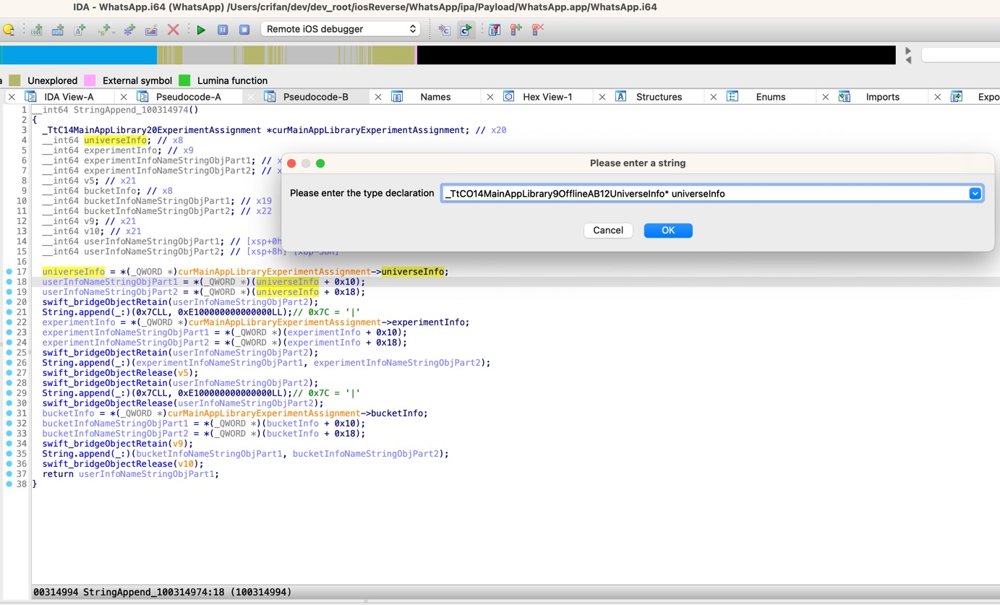
优化后的代码：
__int64 StringAppend_100314974()
{
_TtC14MainAppLibrary20ExperimentAssignment *curMainAppLibraryExperimentAssignment; // x20
_TtCO14MainAppLibrary9OfflineAB12UniverseInfo *universeInfo; // x8
_TtCO14MainAppLibrary9OfflineAB14ExperimentInfo *experimentInfo; // x9
__int64 experimentInfoNameStringObjPart1; // x22
__int64 experimentInfoNameStringObjPart2; // x23
__int64 v5; // x21
_TtCO14MainAppLibrary9OfflineAB10BucketInfo *bucketInfo; // x8
__int64 bucketInfoNameStringObjPart1; // x19
__int64 bucketInfoNameStringObjPart2; // x22
__int64 v9; // x21
__int64 v10; // x21
__int64 userInfoNameStringObjPart1; // [xsp+0h] [xbp-40h]
__int64 userInfoNameStringObjPart2; // [xsp+8h] [xbp-38h]
universeInfo = *(_TtCO14MainAppLibrary9OfflineAB12UniverseInfo **)curMainAppLibraryExperimentAssignment->universeInfo;
userInfoNameStringObjPart1 = *(_QWORD *)universeInfo->name;
userInfoNameStringObjPart2 = *(_QWORD *)&universeInfo->name[8];
swift_bridgeObjectRetain(userInfoNameStringObjPart2);
String.append(_:)(0x7CLL, 0xE100000000000000LL);// 0x7C = '|'
experimentInfo = *(_TtCO14MainAppLibrary9OfflineAB14ExperimentInfo **)curMainAppLibraryExperimentAssignment->experimentInfo;
experimentInfoNameStringObjPart1 = *(_QWORD *)experimentInfo->name;
experimentInfoNameStringObjPart2 = *(_QWORD *)&experimentInfo->name[8];
swift_bridgeObjectRetain(userInfoNameStringObjPart2);
String.append(_:)(experimentInfoNameStringObjPart1, experimentInfoNameStringObjPart2);
swift_bridgeObjectRelease(v5);
swift_bridgeObjectRetain(userInfoNameStringObjPart2);
String.append(_:)(0x7CLL, 0xE100000000000000LL);// 0x7C = '|'
swift_bridgeObjectRelease(userInfoNameStringObjPart2);
bucketInfo = *(_TtCO14MainAppLibrary9OfflineAB10BucketInfo **)curMainAppLibraryExperimentAssignment->bucketInfo;
bucketInfoNameStringObjPart1 = *(_QWORD *)bucketInfo->name;
bucketInfoNameStringObjPart2 = *(_QWORD *)&bucketInfo->name[8];
swift_bridgeObjectRetain(v9);
String.append(_:)(bucketInfoNameStringObjPart1, bucketInfoNameStringObjPart2);
swift_bridgeObjectRelease(v10);
return userInfoNameStringObjPart1;
}
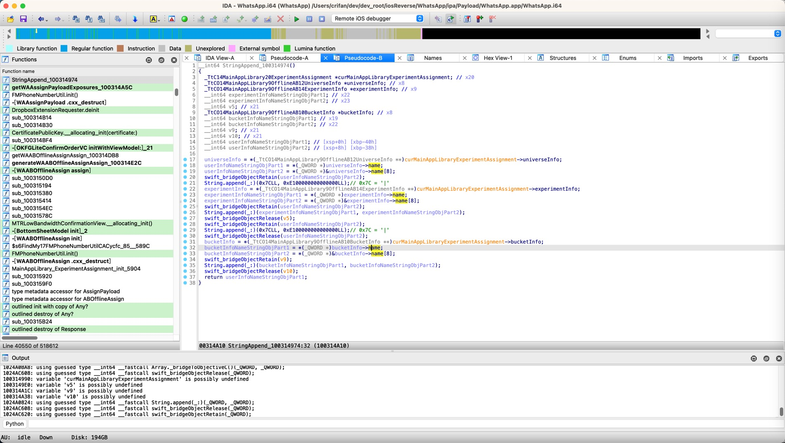